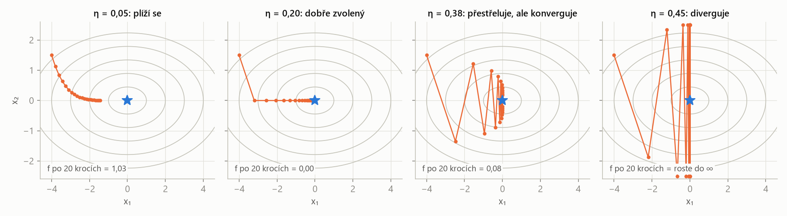
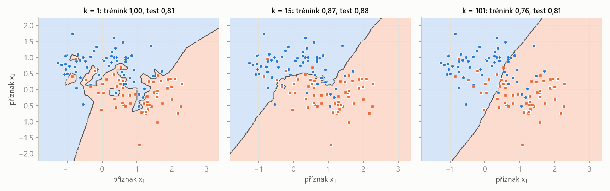

MLR – příprava na zkoušku · Úvod, větve ML a optimalizace – MLR · https://balnerm.github.io/pripravy/mlr/01_uvod.html
Přednáška 1
Úvod, větve strojového učení a optimalizace
Co přesně znamenají slova umělá inteligence, strojové a hluboké učení. Jaké typy úloh strojové učení řeší a proč se skoro každá metoda kurzu dá zapsat jako hledání minima nějaké funkce. Optimalizace je „jazyk“, kterým jsou napsané všechny další přednášky. Na konci kapitoly je opakování nejjednodušších algoritmů (k-NN, k-means, UPGMA) z bakalářského kurzu.
Většinu nového kódu dnes píšou AI agenti (Google uvádí 75 % nového kódu, Anthropic přes 80 %) a člověk ho jen zadává a kontroluje. Co nezmizí, je porozumění metodám: jen díky němu umíš agentovi říct, co má postavit, a poznat, že výsledek nemůže být správně. „Někdo musí umět rozlišit skoro správně od správně.“ Proto se v kurzu k-NN, dopředný výběr nebo backpropagation píšou jednou ručně v NumPy – kvůli pochopení principu, ne kvůli nasazení.
AI, ML a DL: co do čeho patří
Umělá inteligence je souhrnný (zastřešující) pojem pro systémy, které vykonávají úlohy, jež by jinak vyžadovaly lidskou inteligenci – porozumění jazyku, rozhodování, řízení auta.
„deštník“ nad vším, co se chová chytře. Strojové učení je jen jedna z cest, jak AI postavit.
Strojové učení je přístup, při kterém se počítač učí pravidla (model) z dat: člověk dodá data a správné odpovědi a algoritmus z nich odvodí pravidla, která pak použije na nová data.
u klasického programování píše pravidla člověk (data + pravidla → odpovědi, např. třídění, výpočet daní, FIR filtr). U strojového učení je to obráceně: data + odpovědi → pravidla (spamový filtr, klasifikace obrázků, jazykové modely).
Hluboké učení je strojové učení pomocí neuronových sítí s mnoha vrstvami, které se příznaky (features) naučí automaticky přímo z surových dat – za cenu velkého množství dat a výpočetního výkonu.
klasické ML potřebuje ručně navržené příznaky, ale stačí mu málo dat; DL si příznaky najde samo, ale chce hodně dat a GPU. Vztah: DL ⊂ ML ⊂ AI.
| klasické strojové učení | hluboké učení | |
|---|---|---|
| příznaky | navržené ručně (člověk) | naučené automaticky |
| množství dat | stačí málo | potřebuje hodně |
| algoritmy | tradiční (k-NN, SVM, stromy…) | neuronové sítě |
Příbuzné obory: data science (statistika + ML + informatika, cílem je porozumění datům; ML je jeden z nástrojů), počítačové vidění (informace z obrazu a videa – detekce, segmentace, medicínské obrazy; dnes převážně DL) a robotika (AI + vidění + řízení + mechanika).
Úzká (slabá) AI je systém určený pro jednu konkrétní úlohu (spamový filtr, doporučovač, klasifikátor obrázků). Obecná umělá inteligence (AGI, silná AI) je hypotetický systém, který by se učil a uplatňoval znalosti napříč obory a zvládl jakoukoli intelektuální úlohu, kterou zvládne člověk.
vše v tomto kurzu je úzká AI. AGI je zatím teoretický pojem; nejblíže se mu dnes přibližují velké jazykové modely.
Turingův test (1950): pokud hodnotitel nerozezná odpovědi stroje od odpovědí člověka, stroj se chová inteligentně. Jazykové modely ho dnes splní – test ale měří chování, ne porozumění. Zda stroje „myslí“, nebo myšlení jen simulují, je otevřená otázka, kterou kurz nepotřebuje řešit.
Větve strojového učení
Větve se liší tím, jakou informaci algoritmu dáváme: správné odpovědi (labely), nic, nebo odměnu.
Učení s učitelem je učení z označených (labelovaných) dat: ke každému vstupu \(\mathbf x\) známe správný výstup \(y\). Cílem je najít zobrazení \(f: \mathbf x \mapsto y\), které zobecňuje na dosud neviděná data.
„učitel“ ukáže spoustu příkladů s řešením (obrázek + „kočka“) a model se z nich naučí odpovídat i na nové příklady.
Regrese je učení s učitelem se spojitým výstupem \(y\) (cena domu, hladina cholesterolu); hledáme \(\hat y = f(\mathbf x)\), které minimalizuje chybu mezi \(\hat y\) a \(y\). Klasifikace je učení s učitelem s diskrétním výstupem – jednou z několika tříd (kočka/pes, zdravý/nemocný); hledáme rozhodovací funkci, která třídy odděluje.
regrese odpovídá „kolik?“, klasifikace „co to je?“.
Učení bez učitele je učení z neoznačených dat (máme jen \(\mathbf x\), žádné \(y\)); cílem je najít skrytou strukturu v datech. Hlavní větve: shlukování (seskupit podobné vzorky), redukce dimenze (méně příznaků, stejná struktura) a generativní modely (naučit se rozdělení dat a generovat nové vzorky).
nikdo neřekne, co je správně – algoritmus má sám najít, jak jsou data uspořádaná. U shlukování „podobné = blízko“, takže vše závisí na zvolené vzdálenosti.
Posilované učení je učení, při kterém agent interaguje s prostředím: pozoruje stav, provede akci a dostane odměnu. Cílem je strategie (policy), která maximalizuje celkovou (kumulativní) odměnu.
učení metodou pokus–omyl s „cukrem a bičem“ (roboti v bludišti, AlphaGo, hry Atari). V kurzu se neprobírá – vrací se jen jménem v RLHF (dolaďování chatovacích modelů zpětnou vazbou od lidí).
Self-supervised learning je učení, při kterém se pseudo-labely vytvoří ze samotných dat: model řeší pomocnou (pretext) úlohu, aby se naučil užitečnou reprezentaci pro pozdější úlohy.
label si data „vyrobí sama“: zakryjeme slovo a model ho hádá, předpovídá další slovo (LLM), další snímek videa nebo chybějící pixely; kontrastivní učení přitahuje podobné příklady a odpuzuje odlišné. Žádná ruční anotace není potřeba.
| větev | co dostane algoritmus | typická úloha |
|---|---|---|
| s učitelem – regrese | \(\mathbf x\) a spojité \(y\) | odhad ceny, předpověď počasí, délky života |
| s učitelem – klasifikace | \(\mathbf x\) a třídu \(y\) | diagnóza, spam, podvodné transakce |
| bez učitele | jen \(\mathbf x\) | segmentace zákazníků, typy buněk, vizualizace, generování obrázků |
| posilované | odměnu za akce | robot, hra, řízení |
| self-supervised | \(\mathbf x\), label vyrobený z dat | předpověď dalšího slova (LLM), maskované slovo |
Velké jazykové modely (LLM) se trénují na obrovském množství textu, aby předpovídaly další token; labelem je další slovo samotné, takže jde o self-supervised učení. Generování = předpověz, připoj, opakuj. Chatovací model odpovídá (místo aby jen pokračoval v textu) díky druhé fázi: dolaďování na instrukcích a RLHF.
Optimalizace: společný jazyk všech metod
Optimalizace = měníme vstupy tak, abychom dostali co nejlepší výstup: minimalizujeme náklady nebo maximalizujeme odměnu. Představ si krajinu a hledej nejnižší údolí; omezení říkají, kam smíš vstoupit. Příklad z přednášky: mícháš teplou a studenou vodu. Máš dvě kohoutky (vstupy), výstupem je, jak příjemná je voda, a žádný vzorec ani graf – jen ruku pod proudem. Tak funguje i ladění hyperparametrů: zkusíš nastavení, změříš, upravíš.
Optimalizační úloha je hledání bodu \[ \mathbf x^\ast = \arg\min_{\mathbf x \in X} f(\mathbf x) \] tj. hodnoty proměnných \(\mathbf x\), pro kterou je účelová funkce \(f\) nejmenší na přípustné množině \(X\) dané omezeními. Každá úloha má tři části: proměnné (co smíme měnit), účelovou funkci (jedno číslo, které tlačíme dolů) a omezení (vymezují přípustnou množinu).
„co můžu měnit, co chci, aby bylo co nejmenší, a co nesmím porušit“. Konvence: vždy minimalizujeme – maximalizaci \(u(\mathbf x)\) převedeme na minimalizaci \(-u(\mathbf x)\) (stejný minimizér, opačná hodnota).
| \(\mathbf x\) | proměnné – rychlost auta, průtoky kohoutků, váhy modelu |
| \(f(\mathbf x)\) | účelová (cílová, nákladová) funkce – spotřeba, nepohodlí, ztráta modelu |
| \(g_i \le 0\) | nerovnostní omezení (např. \(H \le 5\) l/min) |
| \(h_j = 0\) | rovnostní omezení (např. „sklenice je plná“) |
| \(X\) | přípustná množina – body, které splňují všechna omezení |
Minimum \(p^\ast = \min f\) je číslo – nejmenší dosažitelná hodnota účelové funkce. Minimizér \(\mathbf x^\ast = \arg\min f\) je bod (hodnota proměnných), ve kterém se minima dosahuje; může jich být i víc.
minimum říká „jak dobře to jde“, minimizér „jak to nastavit“. U trénování modelu je minimum nejnižší ztráta a minimizér natrénované váhy.
Omezení je v optimu \(\mathbf x^\ast\) aktivní, pokud v něm platí s rovností (\(g_i(\mathbf x^\ast) = 0\)). Pokud neomezené minimum leží mimo přípustnou množinu, optimum se „přitlačí“ na její hranici a příslušné omezení je aktivní.
aktivní omezení je to, co optimum „zastavilo“ – kdybys ho uvolnil, dostaneš lepší výsledek. Neaktivní omezení výsledek vůbec neovlivňuje.
Průtoky \(H, C\) (l/min), teplá voda 60 °C, studená 10 °C. Teplota a průtok:
\[ T = \frac{60H + 10C}{H + C},\qquad F = H + C \]Účelová funkce a přípustná množina:
\[ J = (T - 38{,}5)^2 + (F - 12)^2 \] \[ 0 \le H \le 5,\qquad C \ge 0 \]- Bez omezení: z podmínek \(H + C = 12\) a \(T = 38{,}5\) vyjde \[ \begin{aligned} 60H + 10(12 - H) &= 38{,}5\cdot12 \\ H = 6{,}84,\quad C &= 5{,}16,\quad J = 0 \end{aligned} \]
- Bojler omezený na \(H \le 5\): neomezené optimum je nepřípustné, optimum se posune na hranici \(H = 5\) a \(C = 4{,}08\): voda má 37,5 °C a 9,1 l/min, \(J = 9{,}5\) místo 0. Omezení \(H \le 5\) je aktivní.
- Křivka spotřeby s omezením \(50 \le v \le 130\) km/h: optimum \(v^\ast = 89{,}4\) leží uvnitř, omezení je neaktivní.
Tvrdé omezení, nebo měkká penalizace?
Omezení („nesmí se porušit“): bezpečnostní limit, rozpočet, fyzikální zákon – může udělat úlohu neřešitelnou. Člen v účelové funkci („čím méně, tím lépe“):
\[ f(\mathbf x) = \text{chyba} + \lambda\cdot\text{penalizace} \]\(\lambda\) říká, jak moc nám na tom záleží, a jen posouvá optimum. Obě cesty jsou možné a dávají různé odpovědi – např. ridge regrese (4. přednáška) převádí rozpočet \(\|\mathbf w\|_2^2 \le t\) na penalizaci \(\lambda\|\mathbf w\|_2^2\).
Minimalizuj jen trénovací chybu – a model si data zapamatuje. Maximalizuj jen senzitivitu – a všichni budou „nemocní“. Volba účelové funkce je rozhodnutí analytika.
Konvexita: kdy je optimalizace snadná
Funkce \(f\) je konvexní, pokud pro všechna \(\mathbf x_1, \mathbf x_2\) a \(\theta \in [0,1]\) platí \[ f(\theta\mathbf x_1 + (1-\theta)\mathbf x_2) \le \theta f(\mathbf x_1) + (1-\theta) f(\mathbf x_2) \] Množina \(C\) je konvexní, pokud s každými dvěma body obsahuje i celou úsečku mezi nimi.
graf konvexní funkce leží pod každou svou tětivou („miska“) a nemá žádná jiná lokální minima než globální. Konvexní množina nemá „zálivy“, za kterými by se minimum schovávalo.
Lokální minimum je bod, který je nejlepší ve svém okolí; globální minimum je nejlepší v celé přípustné množině. V konvexní úloze (konvexní \(f\) na konvexní množině) je každé lokální minimum zároveň globální.
lokální metoda (např. gradientní sestup) skončí v údolí, ve kterém začala – a nepozná, jestli existuje hlubší. U konvexní úlohy je údolí jen jedno. Konvexita ale nezaručuje, že minimizér existuje (\(\min_x e^x\) neexistuje), že je jediný, ani že model je správný.
| třída úlohy / metoda | co to znamená | kde v kurzu |
|---|---|---|
| uzavřený tvar | vzorec, žádné iterace | ridge regrese (inverze matice), průměr a rozptyl, PCA (vlastní vektory) |
| gradientní metody | derivace říká, kam jít | logistická regrese, neuronové sítě |
| lineární programování | lineární \(f\) i omezení | L1 regrese (least absolute deviations) |
| kvadratické programování | kvadratická \(f\), lineární omezení | soft-margin SVM |
| konvexní | snadné – lokální = globální | LASSO, logistická regrese |
| nekonvexní | těžké – heuristiky bez záruk | hluboké sítě, k-means, ladění hyperparametrů |
| diskrétní | obvykle NP-těžké | výběr příznaků |
První dva řádky jsou metody, ostatní vlastnosti úlohy – a úloha si metodu vybírá.
Gradientní sestup
Gradient je vektor parciálních derivací funkce \(f\): \[ \nabla f(\mathbf x) = \left(\frac{\partial f}{\partial x_1}, \dots, \frac{\partial f}{\partial x_n}\right) \] Ukazuje směr nejstrmějšího růstu funkce a má stejný tvar (počet složek) jako \(\mathbf x\).
šipka „do kopce“. Když chceme jít dolů, jdeme proti ní. Funkce \(f\) vrací skalár, gradient je vektor s tolika složkami, kolik je proměnných.
Gradientní sestup je iterační metoda, která v každém kroku posune proměnné proti směru gradientu: \[ \mathbf x^{(t+1)} = \mathbf x^{(t)} - \eta\,\nabla f(\mathbf x^{(t)}) \] kde \(\eta \gt 0\) je krok učení (learning rate).
„jdi z kopce po malých krocích, dokud se terén nezploští“. Stačí umět spočítat derivaci v aktuálním bodě – vzorec pro řešení nepotřebujeme. Přesně takhle se trénují neuronové sítě.
Při nízké rychlosti brzdí ztráty volnoběhu a krátký převod, při vysoké odpor vzduchu ⇒ optimum je někde mezi. Model: \(\text{Fuel}(v) = A/v + Bv + C\) s \(A = 400\), \(B = 0{,}05\).
- Zkoušení (probing): měříme spotřebu v několika rychlostech – naslepo, bez vzorce.
- Uzavřený tvar: derivaci položíme rovnou nule: \[ \begin{aligned} \text{Fuel}'(v) &= -A/v^2 + B = 0 \\ v^\ast &= \sqrt{A/B} = \sqrt{8000} \approx 89{,}4\ \text{km/h} \end{aligned} \] Druhá derivace \(2A/v^3 \gt 0\), takže jde o jediné minimum; \(\text{Fuel}(v^\ast) = 2\sqrt{AB} + C\). Luxus – potřebuje vzorec.
- Gradientní sestup: start \(v_0 = 30\) km/h, \(\eta = 200\), krok \(v \leftarrow v - \eta\,\text{Fuel}'(v)\): \[ \begin{aligned} \text{Fuel}'(30) &= -400/900 + 0{,}05 = -0{,}394 \\ v_1 &= 30 + 200\cdot0{,}394 = 108{,}9 \\ \text{Fuel}'(108{,}9) &= +0{,}016 \\ v_2 &= 105{,}6,\quad v_3 = 102{,}8,\ \dots \end{aligned} \] Už první krok přestřelil optimum (108,9 > 89,4) a sestup se k němu vrací zprava. Po 30 krocích \(v \approx 89{,}5\). Potřebuje jen derivaci v bodě.
Kdy skončit? Malý gradient \(\|\nabla f\| \lt \varepsilon\), malá změna \(f\) nebo \(\mathbf x\), strop na počet iterací; při trénování modelu validační chyba (2. přednáška). Malý gradient ale znamená jen stacionární bod – může to být i sedlo nebo plató. Jen u konvexní úlohy je to jistě globální minimum.

Krok učení rozhoduje o všem. Pro tuto funkci je update po složkách
\[ x_i \leftarrow (1 - \eta q_i)\,x_i,\qquad q_1 = 1,\ \ q_2 = 5 \]Každý krok tedy vynásobí chybu číslem \(|1 - \eta q_i|\). Sestup konverguje právě tehdy, když
\[ |1 - \eta q_i| \lt 1\ \ \forall i \quad\Leftrightarrow\quad \eta \lt \frac2L = \frac25 = 0{,}4 \]kde \(L = \max_i q_i = 5\) je největší křivost. Malé \(\eta\) (0,05) se plíží, 0,2 je ideální, 0,38 kmitá ve strmém směru, 0,45 diverguje.
| parametr | co znamená | ↑ když ho zvětším | ↓ když ho zmenším |
|---|---|---|---|
| krok učení \(\eta\) | jak daleko jdu proti gradientu v jednom kroku | rychlejší postup, ale od \(\eta \gt 2/L\) kmitání a divergence (ztráta roste do ∞) | stabilní, ale velmi pomalé „plížení“; při omezeném počtu iterací nedojde do minima |
| počet iterací / tolerance \(\varepsilon\) | kdy se zastavím | víc iterací = přesnější minimum, víc výpočtu (u modelu riziko přeučení) | dřívější konec, nemusí zkonvergovat |
| počáteční bod \(\mathbf x^{(0)}\) | odkud začínám | u konvexní úlohy nevadí; u nekonvexní určuje, ve kterém lokálním minimu skončím | |
nejvyšší \(\eta\), při kterém ztráta ještě stabilně klesá (v praxi se zkouší po řádech 0,1; 0,01; 0,001).
Proměnné jsou parametry (váhy) \(\mathbf w\), ne data: přímka má 2, malá síť \(10^6\), LLM \(10^{11}\). Účelová funkce je ztráta zprůměrovaná přes trénovací množinu. Omezení obvykle nejsou – stačí obyčejný gradientní sestup. Vzorec pro \(\mathbf w^\ast\) neexistuje, ale ztráta a její gradient v bodě jsou vše, co sestup potřebuje. I k-means je optimalizace: účelová funkce, ošklivá krajina a heuristika.
Skoro každá ML metoda minimalizuje nějakou funkci; gradientní sestup jde proti gradientu krokem \(\eta\), který musí být menší než \(2/L\).
Opakování: nejbližší sousedé (k-NN)
Klasifikátor k-NN zařadí nový vzorek \(\mathbf x^\ast\) tak, že najde \(k\) trénovacích vzorků, které jsou mu nejblíže (podle zvolené vzdálenosti), a přiřadí mu většinovou třídu mezi nimi; u regrese vrací průměr jejich hodnot. Pro \(k = 1\) jde o 1-NN: zkopíruje label nejbližšího bodu.
„řekni mi, kdo jsou tví sousedé, a já ti řeknu, kdo jsi“. Nemá trénovací fázi (lazy learning) – celý „model“ jsou uložená trénovací data.
Vlastnosti: citlivý na šum, měřítko příznaků a odlehlé hodnoty (vzdálenost dominuje příznak s největšími čísly – proto standardizace); hledání sousedů je pro velké \(n\) drahé (pomůže kd-strom). Liché \(k\) brání remíze ve dvou třídách.
| \(\|\cdot\|_2\) | eukleidovská vzdálenost („vzdušnou čarou“) |
| \(\|\cdot\|_1\) | manhattanská vzdálenost (součet rozdílů po osách) |
| \(\|\cdot\|_\infty\) | Čebyševova vzdálenost (největší rozdíl v jedné ose) |
Příklad: \(\mathbf a = (1, 1)\), \(\mathbf b = (2, 3)\), rozdíl \(\mathbf x = \mathbf a - \mathbf b = (-1, -2)\):
\[ \begin{aligned} \|\mathbf x\|_2 &= \sqrt{1 + 4} = \sqrt5 \approx 2{,}24 \\ \|\mathbf x\|_1 &= 1 + 2 = 3 \\ \|\mathbf x\|_\infty &= \max(1, 2) = 2 \end{aligned} \]Třída A: (1, 2), (1,5; 1,8), (1; 0,6); třída B: (5, 8), (8, 8), (9, 11). Nový vzorek (2, 3), eukleidovská vzdálenost:
| bod | třída | vzdálenost od (2, 3) |
|---|---|---|
| (1,5; 1,8) | A | 1,30 |
| (1; 2) | A | 1,41 |
| (1; 0,6) | A | 2,60 |
| (5; 8) | B | 5,83 |
| (8; 8) | B | 7,81 |
| (9; 11) | B | 10,63 |
\(k = 3\): tři nejbližší jsou A, A, A ⇒ třída A. \(k = 5\): hlasování 3 : 2, pořád A.

\(k\) reguluje model (kompromis bias–rozptyl). \(k = 1\): hranice obkresluje každý bod včetně šumu, trénovací přesnost 1,00, ale test jen 0,81 – přeučení. \(k = 15\): hladká hranice, nejlepší test (0,88). \(k = 101\) (skoro všechna data): hranice se blíží přímce, model ignoruje tvar tříd – podučení (test 0,81).
| parametr | co znamená | ↑ když ho zvětším | ↓ když ho zmenším |
|---|---|---|---|
| počet sousedů \(k\) | kolik nejbližších trénovacích bodů hlasuje | hladší hranice, menší rozptyl, větší bias; při \(k \to n\) predikuje vždy většinovou třídu (podučení) | členitější hranice, kopíruje šum; \(k = 1\) má trénovací chybu 0 (přeučení) |
| metrika (L1, L2, L∞, kosinová…) | jak se měří „blízkost“ | mění tvar okolí a tím i hranici; L1 je méně citlivá na jednu velkou odchylku v jedné ose; vždy se musí kombinovat se škálováním příznaků | |
| váhy hlasů (uniform / distance) | mají bližší sousedé větší váhu? | vážení vzdáleností zmírní vliv vzdálenějších sousedů při velkém \(k\) | |
\(k\) se ladí křížovou validací (2. přednáška); u dvou tříd liché, aby nevznikla remíza.
Opakování: k-means a UPGMA
k-means je shlukovací algoritmus, který rozdělí \(n\) bodů do \(k\) shluků, z nichž každý je reprezentován svým průměrem (centroidem) \(\boldsymbol\mu_j\), a minimalizuje přitom inercii – součet čtverců vzdáleností bodů od centroidu jejich shluku: \[ J = \sum_{j=1}^{k}\sum_{\mathbf x_i \in C_j}\|\mathbf x_i - \boldsymbol\mu_j\|_2^2 \]
najdi \(k\) „těžišť“ tak, aby každý bod měl své těžiště co nejblíž. Úloha je nekonvexní – algoritmus najde jen lokální minimum, které závisí na startu.
- Inicializuj \(k\) centroidů (např. náhodně vybrané vzorky).
- Přiřazení: každý bod přiřaď nejbližšímu centroidu.
- Aktualizace: přesuň každý centroid do průměru jeho bodů.
- Opakuj 2–3, dokud se nic nemění.
Každý krok přiřazení i aktualizace může \(J\) jen snížit, proto algoritmus vždy zkonverguje – do lokálního minima. Proto se spouští několikrát z různých startů.
Stejných šest bodů, \(k = 2\), počáteční centroidy \(\boldsymbol\mu_1 = (1, 2)\), \(\boldsymbol\mu_2 = (5, 8)\).
- Přiřazení: (1, 2), (1,5; 1,8), (1; 0,6) → shluk 1; (5, 8), (8, 8), (9, 11) → shluk 2. Inercie \(J = 36{,}25\).
- Aktualizace centroidů (průměry shluků): \[ \begin{aligned} \boldsymbol\mu_1 &= (1{,}17;\ 1{,}47) \\ \boldsymbol\mu_2 &= (7{,}33;\ 9{,}00) \\ J &= 15{,}98 \end{aligned} \]
- Další přiřazení se nezmění ⇒ konvergence.
| parametr | co znamená | ↑ když ho zvětším | ↓ když ho zmenším |
|---|---|---|---|
| počet shluků \(k\) | kolik centroidů hledáme | inercie \(J\) vždy klesne (při \(k = n\) je 0), shluky se dělí na umělé části | slučuje skutečně odlišné skupiny |
| inicializace / počet restartů | odkud centroidy startují a kolikrát zkusíme | víc restartů = větší šance na lepší lokální minimum, víc výpočtu | výsledek víc závisí na náhodě |
\(k\) nelze volit podle minima \(J\) (to by vedlo na \(k = n\)); hledá se „koleno“ křivky \(J(k)\) nebo jiné kritérium.
UPGMA (Unweighted Pair Group Method with Arithmetic Mean) je hierarchické aglomerativní shlukování, které na začátku považuje každý vzorek za samostatný shluk a opakovaně slučuje dva nejbližší shluky; vzdálenost shluků je průměr všech párových vzdáleností mezi jejich body. Výsledkem je strom (dendrogram).
„slepuj vždy dvě nejbližší skupiny, dokud nezbude jedna“; po sloučení \(C_i\) a \(C_j\) se vzdálenost k jinému shluku \(C_k\) přepočítá jako vážený průměr \[ d(C_{ij}, C_k) = \frac{|C_i|\,d(C_i, C_k) + |C_j|\,d(C_j, C_k)}{|C_i| + |C_j|} \]
Matematické minimum (příloha 1)
Pojmy, které další přednášky berou jako samozřejmé. Kontrolní otázky z přednášky:
- minimum \(f(x) = 3x^2 + 5x + 1\): \(f'(x) = 6x + 5 = 0\) ⇒ \(x^\ast = -5/6\) (\(f'' = 6 \gt 0\), takže je to minimum);
- součin matice a vektoru: \[ \begin{pmatrix}1 & 2\\ 3 & 4\end{pmatrix}\begin{pmatrix}1\\-1\end{pmatrix} = \begin{pmatrix}1 - 2\\ 3 - 4\end{pmatrix} = \begin{pmatrix}-1\\-1\end{pmatrix} \]
- střední hodnota hodu kostkou \((1 + \dots + 6)/6 = 3{,}5\).
| pojem | vzorec / pravidlo | kde se v ML použije |
|---|---|---|
| skalární součin | \(\mathbf a^\top\mathbf b = \sum_i a_i b_i = \|\mathbf a\|\|\mathbf b\|\cos\theta\); kosinová podobnost \(\cos\theta\), kosinová vzdálenost \(1 - \cos\theta\) | lineární model \(\mathbf w^\top\mathbf x + b\), projekce v PCA, attention |
| tvary matic | \((n\times d)(d\times k) = (n\times k)\); \(AB \ne BA\); \((AB)^\top = B^\top A^\top\) | vrstva sítě \(W\mathbf x\), \(W \in \mathbb R^{m\times d}\): d vstupů → m výstupů |
| lineární vs. afinní | lineární: \(f(\mathbf x) = W\mathbf x\), \(f(\mathbf 0) = \mathbf 0\); afinní \(W\mathbf x + \mathbf b\); afinní z afinní je afinní | vrstvy bez nelineární aktivace splynou v jednu ⇒ potřeba aktivací |
| vlastní čísla | \(A\mathbf v = \lambda\mathbf v\); symetrická \(A\): reálná \(\lambda\), kolmé vektory; PSD: \(\mathbf x^\top A\mathbf x \ge 0\) | PCA (vlastní vektory kovariance), jádrová matice je PSD |
| derivace | řetízkové pravidlo \(f(g(x))' = f'(g(x))\,g'(x)\); \(\nabla_{\mathbf w}\|X\mathbf w - \mathbf y\|^2 = 2X^\top(X\mathbf w - \mathbf y)\) | gradientní sestup, backpropagation, odvození OLS |
| sigmoida, softmax | \(\sigma(z) = 1/(1 + e^{-z})\), \(\sigma' = \sigma(1-\sigma)\); \(\text{softmax}(\mathbf z)_k = e^{z_k}/\sum_j e^{z_j}\) | převod skóre na pravděpodobnosti |
| logaritmus | \(\ln\prod p_i = \sum\ln p_i\): \(0{,}1^{400}\) je ve float64 nula, ale \(400\ln 0{,}1 = -921\) je běžné číslo | věrohodnost se maximalizuje jako součet logaritmů |
| Bayesova věta | \(P(A\mid B) = P(B\mid A)P(A)/P(B)\) | vzácná třída ⇒ nízká přesnost (precision) pozitivních predikcí |
| entropie, křížová entropie | \(H(p) = -\sum p_k\log p_k\); \(H(p,q) = -\sum p_k\log q_k\); \(D_{KL} = H(p,q) - H(p) \ge 0\) | vzájemná informace, nečistota stromu, ztráta klasifikace |
| normální rozdělení | \(\pm\sigma, \pm2\sigma, \pm3\sigma\) obsahují 68,3 %, 95,4 %, 99,7 %; \(-\ln\mathcal N(y;\hat y,\sigma^2) = (y-\hat y)^2/2\sigma^2 + \text{konst.}\) | gaussovský šum ⇒ MSE |
| rozptyl průměru | průměr \(M\) nezávislých kopií má rozptyl \(\sigma^2/M\) | bagging (6. přednáška) |
Nemoc má 1 z 1000 lidí, test má senzitivitu i specificitu 99 %. Podle Bayesovy věty:
\[ \begin{aligned} P(\text{nemocný}\mid +) &= \frac{0{,}99\cdot0{,}001}{0{,}99\cdot0{,}001 + 0{,}01\cdot0{,}999} \\ &= \frac{0{,}00099}{0{,}01098} = 0{,}090 \end{aligned} \]I velmi dobrý test má u vzácné třídy jen 9 % správných pozitivních výsledků – malá apriorní pravděpodobnost „zničí“ přesnost pozitivních predikcí. (Kontrolní otázka: nemoc 1 ze 100, test 90 % / 90 % ⇒ \(P = 0{,}009/0{,}108 = 0{,}083\).)
Pro one-hot cíl je \(H(p, q) = -\ln q_{\text{správná}}\). Softmax skóre (2; 1; 0,1) dá pravděpodobnosti 0,659; 0,242; 0,099.
- správná je první třída: \(-\ln 0{,}659 = 0{,}417\);
- správná je třetí třída: \(-\ln 0{,}099 = 2{,}31\);
- pro srovnání pravděpodobnost 0,5 pro správnou třídu: \(-\ln 0{,}5 = \ln 2 = 0{,}693\).
„Strojové učení je podmnožina AI, kde se pravidla učí z dat a správných odpovědí, hluboké učení je ML s mnohavrstvými sítěmi, které si příznaky najdou samy. Učení s učitelem má labely – regrese spojité, klasifikace diskrétní; bez učitele hledá strukturu, posilované učení maximalizuje odměnu a self-supervised si labely vyrobí z dat. Trénování modelu je optimalizace: proměnné jsou váhy, účelová funkce je průměrná ztráta. Řeší se většinou gradientním sestupem \(\mathbf w \leftarrow \mathbf w - \eta\nabla L\); krok učení musí být menší než \(2/L\), jinak sestup diverguje, a v nekonvexní úloze najdeme jen lokální minimum.“
Shrnutí
AI je zastřešující pojem, ML je její část učící se pravidla z dat a DL je ML s hlubokými sítěmi a automaticky naučenými příznaky. Větve ML se liší informací, kterou dostanou: labely (regrese, klasifikace), nic (shlukování, redukce dimenze, generativní modely), odměnu (posilované učení) nebo labely vyrobené z dat (self-supervised, LLM). Téměř každá metoda je optimalizační úloha s proměnnými, účelovou funkcí a omezeními; omezení může být aktivní (posune optimum na hranici) a místo tvrdého omezení lze použít penalizaci s váhou \(\lambda\). V konvexní úloze je lokální minimum globální. Gradientní sestup jde proti gradientu krokem \(\eta\); příliš malý krok se plíží, příliš velký (\(\eta \ge 2/L\)) diverguje. k-NN klasifikuje hlasováním \(k\) nejbližších sousedů, kde \(k\) řídí hladkost hranice; k-means minimalizuje inercii Lloydovým algoritmem do lokálního minima; UPGMA staví dendrogram slučováním shluků s průměrnou vzdáleností.
Take-home messages
- DL ⊂ ML ⊂ AI; ML = data + odpovědi → pravidla.
- Regrese předpovídá číslo, klasifikace třídu; učení bez učitele hledá strukturu bez labelů.
- Optimalizační úloha = proměnné + účelová funkce + omezení; minimum je číslo, minimizér bod.
- Konvexní úloha: každé lokální minimum je globální.
- Gradientní sestup: \(\mathbf x \leftarrow \mathbf x - \eta\nabla f\); konvergence jen pro \(\eta \lt 2/L\).
- U k-NN malé \(k\) = přeučení, velké \(k\) = podučení; vždy škáluj příznaky.
- k-means najde jen lokální minimum – restartuj z více startů.
Otázky ke zkoušce
Jaký je rozdíl mezi klasickým programováním a strojovým učením? Jak se liší AI, ML a DL?
Klasické programování: člověk dodá pravidla a data, počítač vydá odpovědi. Strojové učení: člověk dodá data a odpovědi, počítač se naučí pravidla (model). AI je zastřešující pojem pro systémy vykonávající úlohy vyžadující lidskou inteligenci; ML je jedna z cest k AI; DL je ML s mnohavrstvými neuronovými sítěmi, které se příznaky naučí automaticky, ale potřebují hodně dat a výpočetního výkonu.
Popište větve strojového učení a ke každé uveďte typickou úlohu.
Učení s učitelem – labelovaná data; regrese (spojitý výstup, cena domu) a klasifikace (třída, diagnóza). Bez učitele – jen \(\mathbf x\); shlukování (segmentace zákazníků), redukce dimenze (vizualizace), generativní modely (nové obrázky). Posilované – agent, akce, odměna (AlphaGo). Self-supervised – pseudo-labely z dat (předpověď dalšího slova u LLM, maskované slovo).
Definujte optimalizační úlohu. Co je minimum a minimizér a kdy je omezení aktivní?
Hledáme \(\mathbf x^\ast = \arg\min_{\mathbf x\in X} f(\mathbf x)\): proměnné \(\mathbf x\), účelová funkce \(f\), omezení \(g_i \le 0\), \(h_j = 0\) definují přípustnou množinu \(X\). Minimum je číslo (nejmenší hodnota \(f\)), minimizér je bod, kde se ho dosahuje. Omezení je aktivní, když v optimu platí s rovností – je to omezení, které optimum „zastavilo“ (bojler \(H \le 5\) posunul optimum míchání vody na hranici).
Co zaručuje konvexita a co ne?
V konvexní úloze (konvexní funkce na konvexní množině) je každé lokální minimum globální, takže lokální metoda nezabloudí. Konvexita nezaručuje, že minimizér existuje (\(e^x\)), že je jediný, ani že je model správný. Příklady konvexních úloh: LASSO, logistická regrese; nekonvexní: hluboké sítě, k-means.
Napište krok gradientního sestupu. Co se stane při příliš velkém kroku učení a co určuje hranici?
\(\mathbf x^{(t+1)} = \mathbf x^{(t)} - \eta\nabla f(\mathbf x^{(t)})\); gradient je vektor parciálních derivací se stejným počtem složek jako \(\mathbf x\). Při velkém \(\eta\) sestup přestřeluje minimum, kmitá a od určité hodnoty diverguje. Hranici dává největší křivost \(L\) (největší vlastní číslo Hessiánu): konvergence pro \(\eta \lt 2/L\). Pro \(f = \frac12(x_1^2 + 5x_2^2)\) je \(L = 5\), tedy \(\eta \lt 0{,}4\).
Jak funguje k-NN a jak volba k ovlivní výsledek?
Pro nový vzorek najdu \(k\) nejbližších trénovacích bodů a vrátím většinovou třídu (u regrese průměr). Nemá trénovací fázi. Malé \(k\) (1) kopíruje šum – trénovací chyba 0, horší test (přeučení, vysoký rozptyl); velké \(k\) vyhlazuje hranici až k predikci většinové třídy (podučení, vysoký bias). \(k\) se ladí křížovou validací; příznaky je nutné škálovat, protože k-NN počítá vzdálenosti.
Jakou funkci minimalizuje k-means a proč závisí na inicializaci?
Inercii \(J = \sum_j\sum_{\mathbf x_i\in C_j}\|\mathbf x_i - \boldsymbol\mu_j\|^2\). Lloydův algoritmus střídá přiřazení k nejbližšímu centroidu a přepočet centroidů; každý krok \(J\) nezvyšuje, takže zkonverguje, ale jen do lokálního minima nekonvexní úlohy. Jiný start může dát jiné shluky, proto se algoritmus restartuje a vybere se řešení s nejmenším \(J\).